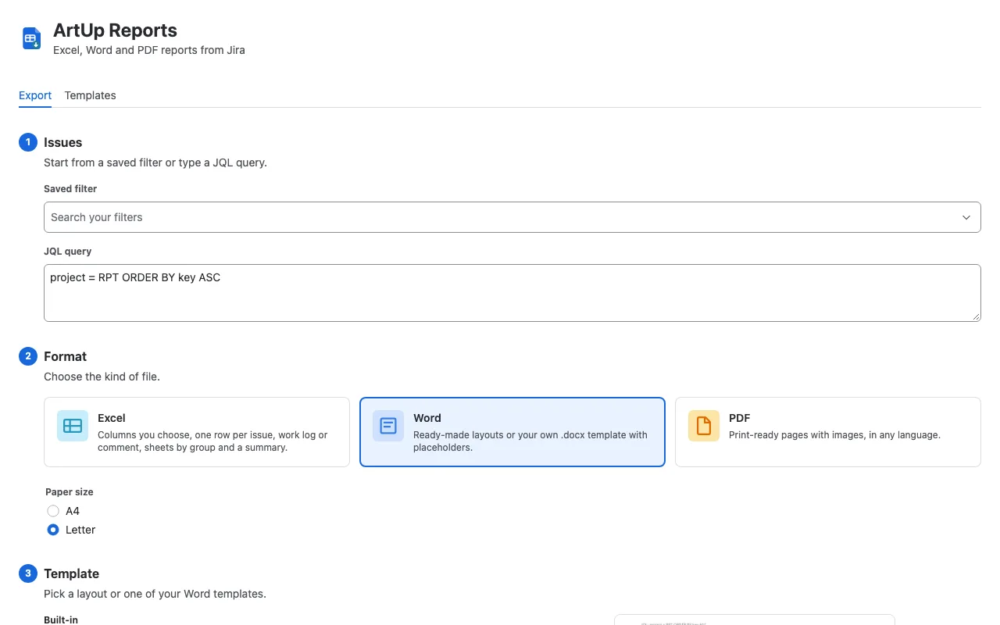
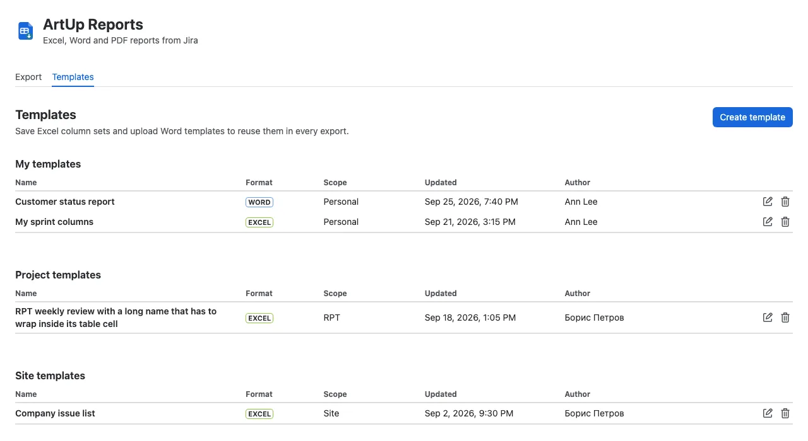
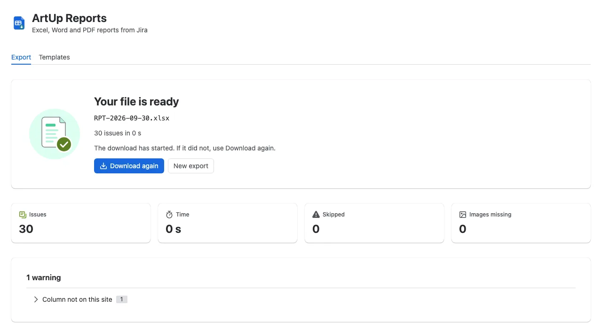

ArtUp Reports documentation
In short: open Export to Excel, Word or PDF from the issue search, a board, a sprint or an issue, choose the issues, a format and a template, and click Export. The file is built in your browser and downloaded to your computer. Save the columns or Word layouts you reuse as templates.
1. Install
- A Jira administrator installs ArtUp Reports from the Atlassian Marketplace (Apps → Explore more apps).
- Sites with up to 10 users use it free; larger sites start a trial or a subscription in Manage apps.
- No configuration is needed. Every user can export the issues they can see in Jira.
2. Where to start an export
| Where | Menu item | What is exported |
|---|---|---|
| Issue search | Apps → Export to Excel, Word or PDF | The current search (its JQL or saved filter). See the known limitation about ticked issues. |
| Board | Export board issues | The issues of the board, through the filter behind it. |
| Backlog | Export backlog issues | The issues of the backlog. |
| Sprint | Export sprint issues | The issues of the sprint. |
| An issue | ••• → Export to Word or PDF | That one issue. |
| Apps menu | ArtUp Reports | Any saved filter or JQL you choose. This page also holds the Templates tab. |
3. Export step by step
- Issues: the source from where you opened the export is filled in. On the ArtUp Reports page, choose a Saved filter or type a JQL query. If Jira cannot run the JQL, its error is shown under the field.
- Format: Excel, Word or PDF; for PDF also the paper size, A4 or Letter.
- Template: a built-in layout or one of your templates (My templates, Project templates, Site templates).
- For Excel, adjust the Columns and check the Preview of the first issues.
- Check the File name — see File names.
- Click Export to …. Progress goes through reading issues, images and building the file. Keep the tab open until the file is ready — the export runs in your browser. Cancel stops it and nothing is downloaded.

4. Formats
Excel (.xlsx)
- Built-in column sets: Issue list, Work logs, Comments, Sprint summary. Add any Jira field as a column with Add a column, remove columns and drag them to reorder (or focus a column and press Alt + ↑ / Alt + ↓).
- One row per issue, work log or comment; Split into sheets by a field; an optional Summary sheet with counts by status, assignee and priority, the JQL, the export time and who exported it.
- Dates are dates, numbers are numbers, issue keys are links. The header row is frozen and has filters.
- A column for a field that does not exist on your site is marked Not on this site.
Word (.docx)
- Built-in layouts: Single issue (every field, the description, comments and images, one issue per page), Issue list, Sprint report, Release notes.
- Or your own Word template — see Word templates.
- Images from descriptions and attachments are placed in the document; headings, lists, tables and code in descriptions are kept.
- The same four layouts as Word, on A4 or Letter. Fonts for Latin, Cyrillic and CJK text are bundled with the app.
- Emoji are left out of the PDF and listed as a warning.
5. Templates
Open ArtUp Reports in the Apps menu → Templates → Create template.
- Excel columns saves the columns, row mode, grouping and summary sheet of an Excel export.
- Word template stores a .docx file you made in Word (up to 2 MB).
| Who can use it | Visible to | Who can create, edit and delete it |
|---|---|---|
| Only me (Personal) | You | You |
| Everyone in a project | People who can browse the project | Project administrators |
| Everyone on this site | Everyone who uses the app | Jira administrators |
Deleting a template deletes it for everyone who can use it; this cannot be undone.

6. Word templates and placeholders
Write your document in Word and put placeholders in double braces where Jira data should go. Download example template in the upload form gives you a working starting point, and Available tags lists every placeholder.
Report: {{title}} Exported {{exportedAt}} by {{exportedBy}}
JQL: {{jql}} ({{count}} issues)
{{#issues}}
{{key}} — {{summary}} [{{status}}, {{assignee}}]
{{@description}}
Story points: {{field "Story Points"}}
{{#comments}}{{author}}, {{created}}: {{body}}
{{/comments}}
{{/issues}}| Kind | Placeholders |
|---|---|
| About the export | jql, exportedBy, exportedAt, count, title, siteUrl, partial, partialBanner |
Inside {{#issues}} … {{/issues}} | key, url, summary, status, assignee, reporter, priority, type, due, created, updated, resolved, resolution, labels, components, fixVersions, project, parent, description, environment, timeSpent, estimate |
Inside {{#comments}} | author, created, body |
Inside {{#worklogs}} | author, started, timeSpent, hours, comment |
Inside {{#subtasks}} | key, summary, status, type, url |
Inside {{#links}} | type, direction, key, summary, status, url |
| Custom field | {{field "Field name"}}, with the field name as it appears in Jira |
| Formatted text | {{@description}}, {{@environment}}, and {{@body}} / {{@comment}} in comment and work log loops — write it alone in its paragraph to keep headings, lists, tables and images |
Placeholders are checked when you upload the file. A mistyped name, a custom field that does not exist on your site or a syntax problem is listed with a suggestion — for example Unknown tag {{summry}}. Did you mean {{summary}}? — and the template cannot be saved until it is fixed. When the file is valid, the form says how many tags it found.
7. File names
The file name follows a pattern; the default is {project}-{date}-{filter}. You can use these tokens:
| Token | Replaced by |
|---|---|
{project} | The project of the first exported issue. |
{date} | Today's date as YYYY-MM-DD. |
{filter} | The source: the saved filter's name, the issue key, board-<id> or sprint-<id>; empty for a typed JQL query. |
{format} | The format of the file. |
{count} | The number of exported issues. |
Characters that are not allowed in file names, and spaces, become -. Names are cut to 120 characters. A partial file gets -PARTIAL before the extension.
8. Result, warnings and partial files
When the file is ready it downloads, and the result screen shows the number of issues, the time, skipped issues, missing images and every warning. Download again saves the same file once more.
- Warnings never stop an export. They include content shown as text, images that could not be found or downloaded, external images left out, columns not on this site, incomplete comments or work logs, issues left out and emoji left out of a PDF.
- Some issues could not be read: Retry missing reads only the missing issues. Download partial file saves what was read; the file gets
-PARTIALin its name and states inside how many issues it holds. - Requests that Jira answered with an error or a rate limit are repeated automatically; the result screen says how many.

9. Limits and known limitations
- Word and PDF: up to 2,000 issues per file. For a larger query the app asks you to narrow the JQL and offers Switch to Excel.
- Excel: no fixed issue limit. In our test, 10,003 issues exported in 11.8 seconds, and the file was read back with 10,003 rows. Time depends on your site, network and attachment sizes.
- Ticked issues in the new issue search. In Jira's new issue search (All work), Jira does not pass the issues you ticked to apps, so the export takes the whole search. The source card shows Issues from the current search with its JQL — that is what will be exported. To export a subset, narrow the JQL, for example
key in (ABC-1, ABC-2). - Word templates: up to 2 MB, and no more than 20 MB once unpacked.
- Keep the tab open. The file is built in your browser; closing the tab cancels the export.
- Issues you cannot see in Jira are not exported.
- One-way. ArtUp Reports does not import spreadsheets into Jira and does not schedule or email exports.
- Jira Cloud only; Data Center is not supported.
10. Data handling
- Issues are read with the permissions of the user who runs the export, through Jira's API in that user's browser.
- The file is built in the browser and downloaded to the user's device. Issue content is not sent to the app's backend and is not stored or logged. The app has no external egress and runs on Atlassian (Forge).
- The app stores only templates in Forge storage: names, settings, Excel column sets, uploaded .docx files and the Atlassian account id of each template's author.
- Scopes are read-only, plus app storage for templates. The app never writes to Jira.
See also Security and the Privacy Policy.
11. Languages and support
The app follows each user's Jira language (26 languages) and the light or dark theme.
Questions, bug reports and feature requests: hello@artuplabs.com. Please include your site URL, where you started the export, the format and template, and for a warning or error its text from the result screen. Do not send issue content beyond what is needed. Response times are on the Support page.